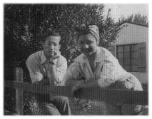

Chapter 10
Commies, Kidnaps and Chaos
'The United States Government at this time [1950] attempted to monopolize all his researches and force him to work on a project "to make man more suggestible" and when he was unwilling, tried to blackmail him by ordering him back to active duty to perform this function. Having made many friends he was able to instantly resign from the Navy and escape this trap. The Government never forgave him for this and soon began vicious, covert international attacks upon his work, all of which were proven false and baseless.' (What is Scientology?, 1978)
 (Scientology's account of the years 1950-51.)
(Scientology's account of the years 1950-51.)
California, ever enchanted by fads and facile philosophies, was the natural habitat of Dianetics and it was to California that Hubbard returned in triumph at the beginning of August 1950, to be feted by joyful Dianeticists waiting to meet him at Los Angeles airport. Two years earlier, he had left as a penniless pulp fiction author; now he was back as a celebrity with a book firmly lodged at the top of every bestseller list and a growing legion of followers who truly believed him to be a genius.
He had a busy schedule ahead: apart from personal appearances and interviews, he was to lecture at the newly-formed Hubbard Dianetic Research Foundation of California, all the big bookstores wanted him for signing sessions and, most important of all, he was to attend a rally on Thursday 10 August at the Shrine Auditorium. It promised to be Dianetics' finest hour, for on that evening the identity of the world's first 'clear' was to be announced.
The Shrine was a vast, mosque-like building with white stucco castellated walls and a dome in each corner, unforgettably characterized by the music critic of the LA Times as being of the 'neo-penal Bagdad' school of architecture. Built in 1925 by the Al Malaikah Temple, it was the largest auditorium in Los Angeles and could seat nearly 6500 people under a swooping ceiling designed to resemble the roof of a tent. When the Hubbard Dianetic Research Foundation booked it for the meeting on 10 August, few people expected more than half the seats to be filled.
Arthur Jean Cox, the young teletype operator who had met Hubbard at the Los Angeles Science Fantasy Society, left early for the meeting by streetcar and was surprised how crowded it was. 'More and more people got on at every stop,' he said. 'I couldn't believe that everyone was going to the meeting but when we arrived at the Shrine on Royal Street, everyone got off. I was absolutely amazed. By the time I got inside there were only a few seats left.'[1]
The audience was predominantly young, noisy and good-humoured. Many people carried well-thumbed copies of 'The Book', in the hope of getting them signed by Hubbard, and there was much speculation about 'the world's first clear' and what he or she would be able to do. Dozens of newspapers and magazines, including Life, had sent reporters and photographers to cover the event and those cynics who had predicted a sea of empty seats looked on in astonishment as even the aisles began to fill.
When L. Ron Hubbard walked on to the stage, followed by A. E. van Vogt, whom he had recently recruited, and other directors of the Foundation, there was a spontaneous roar from the audience, followed by applause and cheering that continued for several minutes. Hubbard, totally assured and relaxed, smiled broadly as he looked around the packed auditorium and finally held up his hands for silence.
The meeting opened with Hubbard demonstrating Dianetic techniques. With the help of a pretty blonde, he showed how to induce Dianetic reverie and then he 'run a grief incident' on a girl called Marcia. While the audience obligingly responded when Hubbard spread his arms for applause at the end of each demonstration, it all seemed a little too well rehearsed and there was a murmur of approval when someone stood up in the audience and called out: 'Ladies and gentlemen, somehow I can't help but feel that all this has been pre-arranged.'
Immediately people began shouting for Hubbard to demonstrate on someone from the audience and when a young man jumped on to the piano in the orchestra pit, a chant went up: 'Take him! Take him!' Hubbard, not in the least flustered by this turn of events, invited him up on to the stage. The young man introduced himself as an actor whose father had studied with Freud, which fortuitously gave Hubbard the opportunity of mentioning his own connection with the great analyst, through his old friend 'Snake' Thompson.
Sitting on facing chairs at the front of the stage, Hubbard made a determined attempt to audit the man, but he proved an unresponsive subject, answering almost every question in the negative. The audience soon became bored and restless and began calling, 'Throw him out, throw him out!' Hubbard, perhaps somewhat relieved, shook the man's hand and he stepped down.
_______________
1. Interview with Cox and letter to Martin Gardner, 30 April 1952
The atmosphere throughout had remained perfectly cordial, even if the shouted comments from the audience were increasingly irreverent. When Hubbard was explaining the multitude of mental and physical benefits arising from successful auditing, someone yelled, 'Are your cavities filling up?' and caused a good deal of laughter.
As the highlight of the evening approached, there was a palpable sense of excitement and anticipation in the packed hall. A hush descended on the audience when at last Hubbard stepped up to the microphone to introduce the 'world's first clear'. She was, he said, a young woman by the name of Sonya Bianca, a physics major and pianist from Boston. Among her many newly acquired attributes, he claimed she had 'full and perfect recall of every moment of her life', which she would be happy to demonstrate. He turned slowly to the wings on one side of the stage and said: 'Will you come out now please, Sonya?'
The audience erupted once more in applause as a thin, obviously nervous, girl stepped out of the wings and into a spotlight which followed her to centre stage, where she was embraced by Hubbard. In a tremulous voice she told the meeting that Dianetics had cleared up her sinus trouble and cured her 'strange and embarrassing' allergy to pain. 'For days after I came in contact with paint I had a painful itching in my eyebrows,' she stammered. 'Now both conditions have cleared up and I feel like a million dollars.' She answered a few routine questions from Hubbard, who then made the mistake of inviting questions from the audience: they had clearly been expecting rather more spectacular revelations.
'What did you have for breakfast on October 3 1942?' somebody yelled. Miss Bianca understandably looked somewhat startled, blinked in the lights and shook her head. 'What's on page 122 of Dianetics, The Modern Science of Mental Health?' someone else asked. Miss Bianca opened her mouth but no words came out. Similar questions came thick and fast, amid much derisive laughter. Many in the audience took pity on the wretched girl and tried to put easier questions, but she was so terrified that she could not even remember simple formulae in physics, her own subject.
As people began getting up and walking out of the auditorium, one man noticed that Hubbard had momentarily turned his back on the girl and shouted, 'OK, what colour necktie is Mr Hubbard wearing?' The world's first 'clear' screwed up her face in a frantic effort to remember, stared into the hostile blackness of the auditorium, then hung her head in misery. It was an awful moment.
Hubbard, sweat glistening in beads on his forehead, stepped forward and brought the demonstration swiftly to an end. Quickwitted as always, he proffered an explanation for Miss Bianca's
impressive lapses of memory. The problem, Dianetically speaking, was that when he called her forward, asking her to come out 'now', the 'now' had frozen her in 'present time' and blocked her total recall. It was not particularly convincing, but it was the best he could do in the circumstances.
Forrie Ackerman, who was at the Shrine that night to see his client perform, summed up the feelings of many people who were there: 'I was somewhat disappointed not to see a vibrant woman in command of herself and situation. She certainly was not my idea of a "clear".'[2]
It would be some time before Hubbard produced another 'Clear' although his followers, in their enthusiasm, would frequently declare that their own protégés had reached that blissful state. One of these was a fifteen-year-old girl of such remarkable powers that she was said to have made her bad teeth fall out and grown new teeth in their place.[3] But no one suggested presenting her at a public meeting.
The débâcle at the Shrine was no more than a hiccup in the rising fortunes of L. Ron Hubbard. When, after the meeting, Ackerman called on his client in his suite at the Frostona Hotel in Los Angeles, Hubbard clapped him on the shoulder and boomed happily: 'Well, Forrie, I'm dragging down Clark Gable's salary.'
It was true: money was literally pouring in. For the first few weeks after van Vogt agreed to take over as head of the Los Angeles Foundation, he recalled doing little but tear open envelopes and pull out $500 cheques from people who wanted to take an auditor's course.[4] Only a few days after the Shrine meeting, the Foundation moved its headquarters into the former official mansion of the governor of California, a sprawling building shaded by palm trees on the corner of South Hoover and Adams, known as the 'Casa' because of its Spanish appearance. Although it cost $4.5 million, enough money had already come in for a down payment. Other branches of the Foundation had opened in New York, Washington DC, Chicago and Honolulu.
But while money was pouring in, it was also pouring out and there was no accounting, no organization, no financial strategy or control. 'One day the bank manager called me,' said van Vogt. 'He told me Mr Hubbard was in the front office and wanted to draw a cashier's cheque for $56,000 and was it all right to give it to him. I said, "He's the boss."'
Trying to hold all the reins, refusing to delegate, Hubbard became ever more authoritarian and suspicious of the people around him. 'He was having a lot of political and organizational problems with people grabbing for power,' said Barbara Kaye [not her real name], a public relations assistant at the Los Angeles Foundation. 'He didn't trust anyone and was highly paranoid. He thought the CIA had hit men
_______________
2. Interview with Ackerman
3. Cults of Unreason, Christopher Evans, 1973
4. Interview with A.E. van Vogt
after him. We'd be walking along the street and I would ask, "Why are you walking so fast?" He would look over his shoulder and say, "You don't know what it's like to be a target." No one was after him: it was all delusion.'
![[Photo of Barbara Kaye]](kaye.jpg)
|
| Between his second and third marriages, Ron dallied with his public relations assistant, luscious Barbara Kaye. She would soon conclude that he was paranoid. |
'My first impression was of a husky, red-haired man with a full, flabby face - not by any means what one would call handsome. If I'd seen him on the street I wouldn't have given him a second look, but I soon learned he was a very creative, intelligent and articulate individual. He had a marvellous personality and was very dynamic. There was a lot going on in the office at that time and sometimes when I worked late he took me home. One night he kissed me and, well, one thing led to another. That's how it all started. I knew he was married, but I was very young at the time and not as concerned with other men's wives as perhaps I should have been.'
It was an affair squeezed into a hectic timetable. Hubbard was lecturing at the Foundation every day, seven days a week. A. E. van Vogt, who had temporarily abandoned science-fiction writing, got up at 5.30 each morning to drive down to the Casa to open the office. Hubbard arrived an hour later and chaired a daily meeting of the staff instructors, most of whom had received their initial training in Elizabeth, New Jersey. At eight o'clock the first students arrived. Hubbard lectured from eight to nine and demonstrated from nine to ten.
'We had an auditorium that could seat 500 people,' said van Vogt, 'but the lectures were always crowded. You see there was nothing available for ordinary people at that time in the way of therapy. Analysts were a lost cause because they were already charging too much and we offered a complete course for $500. What sticks in my mind was how fluently Ron talked off the top of his head. Every morning it was something different. It amazed me. Where had it all come from? That was the question in my mind. The only thoughts I ever got from Ron were that he had observed things they were doing in China and thought they were pretty good. I think he modified Chinese ideas.'
When he was not lecturing in the evenings, Hubbard spent his time with Barbara, who soon found herself hopelessly in love. She was thrilled when he rented a 'love nest' apartment for them at the Chateau
Marmont Hotel, a fake castle on a hill overlooking Sunset Strip which was a favourite haunt of movie stars. The first night they spent there together, Ron seemed to want to reassure her of the permanence of their relationship. He put his arm round her shoulders and took her through the apartment. 'This is your closet,' he said, 'this is your dressing-table, this is your toothbrush . . .' Barbara was deeply touched.
Two days later, Sara and the baby arrived in town from the East Coast and moved into the love nest. When Barbara turned up for work at the Foundation next morning, she found her toothbrush on her desk, along with the few personal possessions she had left at the apartment. While she stood staring at the pathetic little bundle with tears welling in her eyes, Hubbard came over and hissed his apologies, whispered that his wife was a 'bitch' and that there was nothing he could do. 'I miss you,' he croaked. Then, to Barbara's amazement, he asked her if she would like to have dinner with him and Sara that evening. Speechless, she could do no more than shake her head.
Despite the hurt, Barbara could not bring herself to break off the affair. 'I was completely infatuated. I remember I said to my room-mate - we had a small apartment in Beverly Hills - "If I ever tell you I am marrying this guy I want you to tie me up and not let me out of the door because he's a lunatic." But I didn't trust myself not to do it because I was so enchanted by him. Being with him was like watching a fascinating character playing a role on a stage. I was never bored with him. He was a magical, delightful man, a great raconteur, very bright and amusing and a very gentle, patient and sweet lover.
'At the same time I recognized early on that he was also deeply disturbed. Some of the things he told me were really bizarre, but I never knew what to believe. He said his mother was a lesbian and that he had found her in bed with another woman and that he had been born as the result of an attempted abortion. He talked a lot about his grandfather who could really hold his liquor and played a fiddle with the head of a negro carved on the end, but he never talked about his father and never once mentioned he had children. I did not know he had a son until I read it in the newspapers years later.'
Towards the end of September, Barbara accompanied Hubbard on a lecture tour in the San Francisco area in her capacity as public relations officer of the Hubbard Dianetic Research Foundation. To her acute embarrassment, Sara came to see them off at Union Station and ostentatiously kissed her husband goodbye, at the same time sweeping her eyes up and down Barbara's figure. Hubbard, too, was discomforted and drank a great deal in the club car of the train as it rattled north.
His spirits improved greatly when they arrived in San Francisco and he discovered that a welcoming barbecue party had been arranged at the home of a local Dianeticist. Barbara, however, had an unhappy time - during the course of the evening she wandered into the kitchen and found Hubbard kissing his host's wife. Later that evening when she refused to sleep with him he lost his temper and bellowed, 'They're all against me!' That night, Barbara wrote in her diary: 'I see him now as vain, arrogant, self-centred and unable to tolerate any frustration.'
They soon made it up, as a subsequent passage in her diary recorded: 'Things were better in Oakland. He took a penthouse apartment, I was with him constantly and he fell in love with me a little again and I felt closer to him than ever. He drank excessively and talked in proportion to his intake. Grotesque tales about his family mostly and his hatred of his mother, who he said was a lesbian and a whore . . . He is a deeply unhappy man. He said the only thing to show him affection for the last few years, before he met me, was Calico, his cat.'[5]
In October, Hubbard returned to the East Coast for a few days and was greeted at Elizabeth with the news that the Foundation was approaching a financial crisis - its monthly income could no longer even cover the payroll - and Joseph Winter, the man who had done so much to validate Dianetics, was about to resign.
Winter was deeply disillusioned with the Hubbard Dianetic Research Foundation. He no longer believed that Dianetics was free from risk - two pre-clears had developed acute psychoses during auditing - and he was extremely worried by the Foundation's continuing willingness to accept anyone for training as an auditor.
'People had breakdowns quite often,' said Perry Chapdelaine, a Sears Roebuck clerk from Mason City, Iowa, who was a student at Elizabeth. 'It was always hushed up before anyone found out about it. It happened to a guy on my course, a chemical engineer. They wanted to get him out of the school and I volunteered to stay with him in an adjoining building. He never slept or ate and was in a terrible state, no one could do anything with him and in the end they took him off to an asylum.'[6]
Apart from what he considered to be inherent dangers in allowing anyone to audit anyone, Winter had also begun to doubt whether the state of 'clear' was realistically obtainable. Finally, he was frustrated by the fact that the Research Foundation was making absolutely no attempt to conduct any serious scientific research, which was one of its avowed aims. He had voiced his growing concern on several occasions, only to be airily dismissed by Hubbard. It became clear to Winter that he had no alternative but to resign.[7]
_______________
5. Interviews with Barbara Kaye, Los Angeles, 28 July - 5 August 1986
6. Interview with Perry Chapdelaine, Nashville, 25 April 1986
7. Winter, op. cit.
Art Ceppos was largely in sympathy with Winter and also submitted his resignation. Hubbard's reaction was typically immoderate. Angry and bitter at what he considered to be a betrayal by two of his earliest supporters, he spread the word that Winter and Ceppos had been plotting to seize control of the Foundation and had consequently been 'forced' to resign.[8]
It was not Hubbard's style to be satisfied with simply blackening the reputation of his enemies - he wanted revenge. An opportunity presented itself in the unlovely form of Senator Joe McCarthy, the self-seeking demagogue who, in February 1950, had accused the State Department of being riddled with Communists and Communist sympathizers. The atmosphere of fear and suspicion generated during the witch-hunts that followed cast a shadow across America; almost nothing was worse, during the era of McCarthyism, than to be a 'Commie', or be thought to be a 'Commie'. On 3 November 1950, the general counsel of the Hubbard Dianetic Research Foundation in Elizabeth contacted the FBI and said that Art Ceppos, president of Hermitage House, was a Communist sympathizer who had recently tried to get hold of the Foundation's mailing list of sixteen thousand names which would be 'valuable to anyone interested in circulating Communist party literature'.[9]
Hubbard stayed less than a week in Elizabeth and made little attempt to resolve the financial crisis facing the Foundation. He had absolutely no interest in balance sheets and operated on the optimistic, if unrealistic, belief that somehow everything would come out all right in the end. Further problems, of a more personal nature, arose when he returned to Los Angeles: he began to suspect his wife was having an affair. One evening he had insisted on an outlandish double date with his wife and his lover. Barbara, who hated the idea, reluctantly showed up to meet Ron and Sara at a Los Angeles restaurant in the company of Miles Hollister, one of the instructors from the LA Foundation. 'I think Sara must have known what was going on,' said Barbara. 'She was very hostile. At one point in the evening we were talking about guns and she said I looked like the type to carry a Saturday night special.'
The dinner party back-fired on Hubbard - his lover's date became his wife's lover. Miles Hollister was twenty-two years old, tall, dark-haired and strikingly handsome, a graduate of Bard College in New York State, where he had been president of the student body, and a sportsman of some repute - he was the first man to land a swordfish off the coast of Florida using light tackle. In short, he was everything that Hubbard was not: young, attractive, sporting and well-connected. It was hardly surprising that Hubbard conceived a passionate loathing for the young man and predictable that he would
_______________
8. Letter to Barbara Kaye from Hubbard, 21 Oct 1951
9. US Govt memo to Director FBI from SAC Newark, 21 Mar 1951
retaliate. His first move was curiously elliptical - he summarily fired two of Hollister's closest friends at the Foundation, claiming they were Communists.
Jack Horner, who was by then working at the Los Angeles Foundation, attempted to intervene on their behalf. 'They were both nice guys and highly trained instructors and I tried to get them off the hook. I went and confronted Hubbard in his office and said, "You can't fire those guys, you don't have any evidence." He ranted and raved, pacing up and down, and said, "You don't understand. I'm fighting a battle here. I might lose some people on the way, but I'm going to win."
'Hubbard was willing to do anything, for him it was any means to an end. A couple of weeks later he got mad at a fellow named Charlie Crail, who had helped set up the LA organization. They had some disagreement about how the place should be run. He called me and another guy into his office and told us to go and steal Charlie's Dianetics certificates. We told him we wouldn't do it and that he shouldn't count on us for that kind of operation. He couldn't understand it. As far as he was concerned, because he had signed the certificates they belonged to him. There were lots of incidents like that, but I was usually prepared to go along with them because I felt his genius far outshone his craziness.'[10]
With his suspicions festering, Hubbard's relationship with Sara deteriorated rapidly. One night they had a violent row and Sara shouted at him, 'Why don't you just go off and spend the weekend with some pretty girl!' Hubbard stormed out of the house, picked up Barbara Kaye and drove to a motel in Malibu, where he spent much of the weekend moodily swigging whisky.
'He was very down in the dumps about his wife,' said Barbara. 'He told me how he had met Sara. He said he went to a party and got drunk and when he woke up in the morning he found Sara was in bed with him. He was having a lot of problems with her. I remember he said to me I was the only person he knew who would set up a white silk tent for him. I was rather surprised when we were driving back to LA on Sunday evening, he stopped at a florist to buy some flowers for his wife.'
Barbara kept a meticulous diary in which she constantly analyzed and re-analyzed her affair with Hubbard, speculated on his mental condition and recorded day-to-day drama. On Monday 27 November, she noted that Hubbard burst into her office that morning 'tremendously emotionally disturbed'. Sara had tried to commit suicide over the weekend by taking sleeping pills, he said, after Barbara had spoken to her on the telephone. He assumed Barbara had told her about their affair.
_______________
10. Interview with Horner
It was not true. Barbara had telephoned to speak to Hubbard about Foundation business and had only exchanged a few words with Sara after learning Ron was not at home. Hubbard would not believe it: he had audited Sara and 'recovered an engram' indicating that her suicide attempt was triggered by Barbara's telephone call.
An argument inevitably followed and Barbara reconstructed the extraordinary 'highlights' in her journal, very much as if she was writing a pulp romance:
'ME: You make a habit of instilling engrams, too, don't you? That's fine. That's good behaviour for the founder of Dianetics.Barbara discovered just how unwise it was when, two days later, she received a terse message via Western Union: 'Would advise you to
HE: Isn't it exciting for you being a pawn on such a grand chess board? You are playing for the world. Can you think of anything more exciting?
ME: I don't give a good God damn about the world. I want a single, gratifying, human relationship.
HE: You couldn't have one. You're an ambitious woman. You crave power. You're a Marie Antoinette, a Cleopatra, a Lucretia Borgia . . . you must have a Caesar or an Alexander.
ME: No, I don't need a Caesar, though Caesar may need me. I know you now, Ron, and at this moment am closer to you than anyone has ever been.
HE: (Head hung low) And knowing me you don't care for me any more.
ME: I care for you in a different, new and exciting way. (He put his hands on my shoulders and drew me to him.)
HE: I shouldn't do this. (He kissed me.)
ME: You still care for me.
HE: How do you know?
ME: You can't find your hat. You're distracted.
HE: That makes you feel powerful, doesn't it?
ME: It makes me aware of something interesting. You still want me.
HE: Why?
ME: Because you need me. You need me more than I need you.
HE: In 1939 I was very much in love with a girl. She felt that way too. When I knew she had a boyfriend coming up, I waited on the stairway with a gun, just for a moment. Then I said they are flies. I realized who and what I was and left. I told her I would leave her free to marry a sharpie with a cigar in his mouth from Muncie, Indiana. Would you like to be left free?
ME: The alternative is a sharpie with a Kool cigarette from Elizabeth, New Jersey.
HE: That was unwise, very unwise, of you to say that.'
forget all about me and the Foundation - Ron.' 'I was in shock,' she recalled. 'Here was the man I was supposed to be having a great love affair with telling me I was fired.'
A.E. van Vogt, meanwhile, was striving to keep the Los Angeles Foundation in business. He calculated that the six Hubbard Dianetic Research Foundations had spent around one million dollars and were more than $200,000 in debt. At the beginning of November, while Hubbard was away on the East Coast, van Vogt cut the staff of sixty by half in an attempt to stay solvent. Hubbard was furious and began hiring indiscriminately the moment he returned: within a week, the payroll was back up to sixty-seven people. Van Vogt remonstrated, but Hubbard insisted that the extra staff was needed for research. 'Financial disaster was inevitable,' said van Vogt.[11]
One of the research projects about which Hubbard was very excited was the aptly named 'GUK' programme. 'GUK' was a haphazard cocktail of benzedrine, vitamins and glutamic acid which Hubbard believed facilitated auditing. 'I recall Ron telling a meeting about this great breakthrough in Dianetics,' said Forrest Ackerman. 'He said he had discovered a chemical way to audit yourself called GUK. It comprised huge quantities of vitamins which you took every two hours for at least twenty-four hours. If you took enough, he said, it would release the engrams within you without the need for a partner.
'The Foundation rented a huge complex on Rossmore near Beverly and loads of Dianeticists were holed up there going through the GUK programme but it didn't last too long - I think it was a dead end.'
In December, Look magazine published a scathing article under the headline 'Dianetics - Science or Hoax?' The text left the reader in little doubt as to which the magazine thought it was. 'Half a million laymen have swallowed this poor man's psychiatry . . .' it began. 'Hubbard has demonstrated once again that Barnum underestimated the sucker birth rate.' The tens of thousands of people who had swallowed Hubbard's doctrine were characterized as 'the usual lunatic fringe types, frustrated maiden ladies who have worked their way through all the available cults, young men whose homosexual engrams are all too obvious . . .' The article referred to the 'awe, fear and deep disgust' with which the medical profession viewed Dianetics and quoted a doctor at the famous Menninger Clinic in Topeka, Kansas, who conceded that sufferers from mental malaise might find temporary relief from 'Dianetic hocus pocus' just as they sometimes do from hypnotism or voodoo. 'But,' he added, 'the greatest harm to a person would come not because of the vicious nature of Dianetic therapy but because it will lead them away from treatment which they may badly need.'
_______________
11. Dianetics and the Professions, A.E. van Vogt, 1953
Hubbard's primary attraction, Look concluded, was that his ersatz psychiatry was available to all. 'It's cheap. It's accessible. It's a public festival to be played at clubs and parties. In a country with only 6000 professional psychiatrists, whose usual consultation fees start at $15 an hour, Hubbard has introduced mass-production methods. Whether such methods can actually help you if you're sick is a moot point.'
As always in the face of an attack, particularly from the direction of the despised media, committed Dianeticists closed ranks and there was no lack of cheer at the LA Foundation's Christmas party, attended by staff and students alike. Barbara Kaye turned up and was asked to dance by Hubbard. 'I need some counselling, doctor, 'she whispered in his ear. 'What do you do with a pre-clear who keeps dreaming she is in bed with you?' He grinned broadly and replied, 'I have been thinking of beginning a series of empirical tests on the result of substituting the reality for the dream.' Within a few days, their affair resumed: on New Year's Eve, Hubbard missed the party he was supposed to attend with Sara and spent the night with Barbara at her apartment on Dale Drive in Beverly Hills.
In January 1951, the New Jersey Board of Medical Examiners instituted proceedings against the Hubbard Dianetic Research Foundation in Elizabeth, accusing it of teaching medicine without a licence. The Foundation hired an attorney who was confident he could defend the suit, but there was a strong feeling among the directors that they should 'skip'; inquiries were instituted to find a state where they would be more welcome.[12] Hubbard, who clearly thought the prospects in New Jersey looked bleak, asked two reliable students at Elizabeth - John Sanborn and Greg Hemingway, the youngest son of the writer - to load all his personal possessions into his black Lincoln limousine and drive it to Los Angeles.
In the interim, perhaps still hoping to save his marriage, he persuaded Sara and the baby to accompany him to Palm Springs, where he had rented a single-storey adobe house with a small garden of flowering shrubs on Mel Avenue. He wanted to get away from the distractions of Los Angeles, he explained, to start writing a sequel to Dianetics. It was to be called Science of Survival and would introduce faster, simplified auditing techniques.
|
 |
| Richard de Mille and Barbara Kaye at the house in Palm Springs where Hubbard plotted to kidnap his daughter Alexis. |
_______________
12. A Factual Report on Dianetics, John W. Maloney, Feb 1952
'There was a lot of turmoil and dissension in the Foundation at the time; he kept accusing Communists of trying to take control and he was having difficulties with Sara. It was clear their marriage was breaking up - she was very critical of him and he told me she was fooling around with Hollister and he didn't trust her.'[13]
Predictably, Sara did not stay long in Palm Springs - the tension was more than she could stand. Hubbard did not try to detain her and as soon as she and Alexis had departed for Los Angeles, he sent a telegram to Barbara Kaye telling her he loved her and needed her. She caught a bus for Palm Springs on 3 February and was met by Hubbard at the bus station. 'As he walked towards me,' she said, 'I could see that he was ill.'
Kaye, who would later become a psychologist, said she made a clinical diagnosis of Hubbard during the weeks they spent together in Palm Springs. 'There was no doubt in my mind he was a manic depressive with paranoid tendencies. Many manics are delightful, productive people with tremendous energy and self-confidence. He was like that in his manic stage - enormously creative, carried away by feelings of omnipotence and talking all the time of grandiose schemes.
'But when I arrived he was in a deep depression. He had been totally unable to work on his book, which had been originally scheduled for publication that month. That's why he had called me - he was hoping I could help him get through his writers' block. He was very sad and lethargic, lying around feeling sorry for himself and drinking a great deal. Sometimes he would go to the piano and fiddle around, improvising weird melodies of his own composition. He thought that Sara had hypnotised him in his sleep and commanded him not to write. He told me that the people in Elizabeth had tried to "slip him a Mickey" in his glass of milk and another time they attempted to insert a fatal hypo into his eye and heart to try and stop him from ever writing again. Those were the engrams he was running.
'I tried to help him by using a technique I had learned at college, breaking down the problem into small parts and presenting it a step at a time. I got a block of butcher's paper and said to him, "Look, you don't have to write. Just sit down at this table and look at the paper and when you don't want to look at it any more, get up and leave." He sat there for ten minutes on the first day and this went on for several days until one day he picked up a pencil and began to write. Next day he was back at work, very excited and enthused about what he was doing. He was singing and horsing around, talking, laughing and discussing ideas in the kitchen until three o'clock in the morning.'
One of Hubbard's favourite topics of conversation was psychiatrists. One night over dinner at Mel Avenue, he told Barbara about an occasion when he had demonstrated auditing techniques to a group
_______________
13. Interview with Richard de Mille, Santa Barbera, 25 July 1986
of psychiatrists and one of them had said to him, 'If you claim to cure people by doing that, if you're not careful we'll lock you up.' He laughed excessively, took a bite out of a chicken leg and spluttered, 'They called me a paranoid, can you imagine it?' That night Barbara wrote in her diary: 'My blood ran cold as he was saying that. It was all I could do to keep from weeping.'
Barbara had been in Palm Springs for nearly three weeks when Ron began fretting that 'something was brewing' in Los Angeles. He decided that they should return immediately, even though the book was not yet finished.
'I didn't see him for a week after we got back,' Barbara said, 'then he turned up at my place at about five o'clock one afternoon, very distraught and pale, with his hair all over the place. He paced up and down in my room and told me he had discovered Miles and Sara in bed together. He was afraid that they were plotting with a psychiatrist in San Francisco to get him committed to a mental institution. Sara had telephoned Jack Maloney, the general manager in Elizabeth, and said a doctor had recommended he should be treated for paranoid schizophrenia. He said he had found letters proving that Miles was conspiring with Ceppos and Winter to get control of the Foundation. "Please don't ask me anything," he said. "I'm in a very bad way. I'm going to the desert for a few days alone. Things are very bad."'
Hubbard did not go off into the desert alone. He had other plans: he was going to get Sara committed before she committed him. But first he had to kidnap Alexis.
On the evening of Saturday, 24 February 1951, John Sanborn was babysitting for eleven-month-old Alexis Hubbard at the Casa on Hoover and Adams in Los Angeles. Several of the staff, Sanborn included, lived in one wing of the building. Sanborn and Greg Hemingway used to hang around with Hank and Marge Hunter, who worked in the research department; they'd usually eat together in a little joint down the road called 'The Bread Line'. Marge, who was a friend of Sara's, had a baby daughter the same age as Alexis and Sara occasionally left Alexis with Marge when she wanted to go out.
This particularly Saturday evening, Sanborn was tired and when there was a suggestion that they should all go to the movies, he offered to stay behind and look after the kids. He had done it lots of times before, knew all about changing nappies and giving them bottles. Marge was grateful and went off with the others, happy to have a night out, leaving Sanborn in charge of her daughter, Tam, and 'Lexie'.
At about eleven o'clock there was an urgent rapping at the door. Sanborn opened it and found Frank Dessler, one of Hubbard's aides, standing on the doorstep wearing a long topcoat and wide-brimmed
felt hat. His hands were thrust into his coat pockets in such a way that Sanborn was positive he was carrying a gun. 'Mr Hubbard's coming,' Dessler rasped. 'He's here to get Alexis.' Sanborn thought it was a hell of a time of night to do it, but said nothing.
A few minutes later, Hubbard came in, also wearing a topcoat and felt hat. 'We're just taking Alexis,' he said. Sanborn led the way to the room where both children were sleeping. Hubbard leaned over and picked up a toy from Alexis's crib. 'This hers?' he asked. Sanborn shook his head and Hubbard threw it on the floor. While they were getting the baby's things together, Sanborn started to say, 'Listen, if she wakes up in the night there's a certain routine . . .' but Hubbard cut him short. 'I don't care about that,' he snapped. 'We've got a nurse for her and we're taking her to Palm Springs.' He picked Alexis out of her crib, still asleep, and hurried away into the night.
Sanborn wondered idly what was going on, but he went to bed soon afterwards. At one o'clock in the morning he was woken by someone shaking him violently and he sat up with a start to find Miles Hollister standing over his bed. If he had not been so sleepy, he would have laughed: Hollister, too, was wearing a long topcoat and felt hat and also appeared to be carrying a gun. 'Where did Ron take Lexie?' he demanded. Sanborn rubbed his eyes and mumbled, 'Palm Springs.' 'When did they leave?' Hollister asked. It seemed that Sanborn did nut respond quickly enough, for Hollister shouted 'When did they leave?' Sanborn told him and he hurried out of the room. A few minutes later, Sanborn heard Hollister revving his car outside.
Hollister headed out of town at high speed in the direction of Palm Springs, which was exactly what Hubbard had intended him to do. By then, Alexis had been handed over to the twenty-four hour Westwood Nurses Registry in Los Angeles. Hubbard, posing as a businessman by the name of James Olsen, had asked the agency to arrange for his child, Anne-Marie, to be put in the care of a competent nurse for about a month because his wife had suddenly been taken seriously ill and business commitments required him to leave immediately for the East Coast. Melba McGonigel, the owner of the agency, was deeply suspicious but agreed to take the baby after 'Mr Olsen' had signed a 'To whom it may concern' statement releasing the agency of any responsibility.
Shortly after one o'clock on the morning of 25 February, a black Lincoln drew up outside the Hubbards' apartment at 1251 Westmoreland Avenue in West Los Angeles. Richard de Mille was at the wheel, Hubbard and Frank Dessler were in the back. Inside the house, Sara sat in her nightgown by the telephone, weeping into a handkerchief as she waited for news of Alexis. She jumped up in alarm when she heard a key scraping at the door, but her fear turned to anger when her
husband and Dessler appeared in the doorway. 'Where's Lexie?' she screamed. Neither man said a word. They grabbed her by each arm, one of them clamped a hand over her mouth and they bustled her out of the house, across the sidewalk and into the back of the car, which drove off at speed.
Sara fought like a cat in the back of the car, screaming and shouting at Hubbard, who in turn was shouting at her. At one point, when the car stopped at traffic lights, she tried to leap out and thereafter Hubbard gripped her round the neck in a stranglehold while the argument continued. 'She was enraged at being hauled off and was fulminating insults in all directions,' said de Mille. 'She was very bitter about their marriage and his conduct and Ron was fulminating against Miles Hollister and her conduct.'
At Los Angeles city limit, Dessler was dropped off and the Lincoln sped on towards San Bernardino, where Ron hoped to get Sara medically examined and declared insane. 'She was eager to get the same opinion about him,' de Mille declared, 'but Ron held all the cards at that point.' There followed a ludicrous farce as they toured the dark streets of San Bernardino trying to find a doctor while Sara alternately screamed at, and pleaded with, her husband to tell her where he had taken Alexis. Eventually, Hubbard went into the county hospital while de Mille guarded Sara in the car. He returned after some few minutes, apparently surprised and disgusted that there was no doctor available in the early hours of the morning willing to declare his wife insane.
At dawn, the Lincoln could be seen trailing a cloud of dust as it headed east across the desert towards the Arizona border; Hubbard had ordered de Mille to drive to the airport at Yuma. The angry squabbling in the back of the car had not let up for a moment. Sara swore again and again that she would have Ron arrested for kidnapping the moment she was free and he swore that if she did she would never see Alexis again. The mutual threats and recriminations continued while Hubbard was thinking hard how he could extricate himself from the situation.
Parked in the watery early morning sunshine in a quiet corner of Yuma airport, the warring couple at last agreed on a temporary truce. Hubbard promised to release Sara and tell her where Alexis was if she signed a piece of paper saying that she had gone with him voluntarily. Sara tearfully signed and Hubbard scribbled a note to Dessler: 'Feb. 25. To Frank - This will authorize Sara to take Alexis to live with her when she has a house. L. Ron Hubbard.' He jotted down the name of the agency he said was caring for Alexis - 'Baby Sitters Inc, Hollywood phone book' - and added, 'Give Sara the baby's address now so Sara can see her.'
Hubbard and de Mille got out of the car and Sara, still in her nightgown, drove back to Los Angeles clutching the piece of paper she believed would enable her to be re-united with her baby. But Hubbard had no intention of permitting such a reunion. 'He believed that as long as he had the child he could control the situation,' de Mille explained.
While Sara was on her way back to Los Angeles, Hubbard was standing in a telephone booth at Yuma airport giving urgent instructions to Frank Dessler. He was to arrange for Alexis to be collected from her nurse before Sara got there. No matter what it cost, he was then to hire a reliable couple to drive the baby to Elizabeth, New Jersey, where Hubbard would meet her.
It did not take long for Sara to discover that Ron had misled her but by the time she had persuaded Dessler to reveal the baby's whereabouts it was too late. She arrived at the Westwood nursery just two hours after Alexis had been taken away. Sara filed a kidnapping complaint with Los Angeles police department, but Hubbard was lucky - the police dismissed the incident as a domestic dispute which was nothing to do with them.
Hubbard did not go directly to Elizabeth because he wanted to block any further attempts Sara might make to have him committed. Accompanied by the loyal de Mille, he caught a commuter plane to Phoenix and from there they flew to Chicago, where Hubbard presented himself for examination by a psychiatrist and a psychologist, both equally bemused.
'He wanted a testimonial from a professional who would say he was OK and that he was not a paranoid schizophrene,' said de Mille. 'He and I went first to a psychiatrist who didn't like the smell of it. He obviously thought he was being manipulated, so we just paid him $10 and left. Then we went to a prominent diagnostic psychologist of that era who did some projective testing on Hubbard and produced an upbeat, harmless report, saying that he was a creative individual upset by family problems and dissension and it was depressing his work and so forth. It was very bland but Hubbard was delighted with it. The main value of it to him was that it didn't say he was crazy, so he could claim he had been given a clean bill of health by the psychiatric profession.'
Before leaving Chicago, Hubbard called at the offices of the FBI to alert them of his suspicions that one of his employees was a Communist. The man's name, he was far from reluctant to reveal, was Miles Hollister.[14] Hubbard and de Mille then flew to New York and caught a taxi to Elizabeth, where the Hubbard Dianetic Research Foundation was still in operation, although besieged by creditors. They checked into a hotel and waited for Alexis to arrive.
_______________
14. US Govt memo to Director FBI from SAC Chicago, 27 April 1951
While they were there, a further complication entered Hubbard's already entangled private life: Polly Hubbard filed suit in Port Orchard, Washington, for maintenance, alleging that her former husband had 'promoted a cult called Dianetics', had authored a bestseller, owned valuable property and was well able to afford payment of maintenance for his two children, Nibs, then sixteen, and Katie, fifteen. Hubbard responded by claiming that his first wife was not a fit and proper person to have control of the children because she 'drinks to excess and is a dipsomaniac'.
On 3 March 1951, Hubbard, in his role as patriotic citizen, wrote to the FBI in Washington to provide the names and descriptions of fifteen 'known or suspected Communists' within his organization. Heading the list were his wife and her lover:
'SARA NORTHRUP (HUBBARD): formerly of 1003 S. Orange Grove Avenue, Pasadena, Calif. 25 yrs. of age, 5'10", 140 lbs. Currently missing somewhere in California. Suspected only. Had been friendly with many Communists. Currently intimate with them but evidently under coercion. Drug addiction set in fall 1950. Nothing of this known to me until a few weeks ago. Separation papers being filed and divorce applied for.
'MILES HOLLISTER: Somewhere in the vicinity of Los Angeles. Evidently a prime mover but very young. About 22 yrs, 6', 180 lbs. Black hair. Sharp chin, broad forehead, rather Slavic. Confessedly a member of the Young Communists. Center of most turbulence in our organization. Dissmissed [sic] in February when affiliations discovered. Active and dangerous. Commonly armed. Outspokenly disloyal to the U.S.'
FBI director John Edgar Hoover replied promptly: 'I wish to thank you for the information you have made available to this Bureau.'[15]
Four days later, Hubbard kept an appointment, arranged at his request, with an FBI agent from the Internal Security Section. His intention was to press home his accusations against Hollister, as was evident from the agent's report: 'Hubbard advised that he felt that Communists within his organization were undermining its structure. He advised that he had turned over the names of several suspected Communists to the FBI office in Los Angeles. Hubbard could only recall the name of one of these individuals. He stated Miles Hollister was one of the individuals he suspected of being Communistically inclined. Concerning Hollister, Hubbard stated that he was instrumental in driving Hubbard's wife, Sara Elizabeth Northrup, to the point of insanity. Hubbard expressed considerable concern in connection with Hollister's influence on his wife. He stated that his wife, as well as his Army .45 automatic, had been missing for several days . . .'
_______________
15. Letter in FBI files, 10 Mar 1951
Later in the interview, Hubbard disclosed that Russia was interested in his work. 'Hubbard stated that he strongly feels that Dianetics can be used to combat Communism. However, he declined to elaborate on how this might be done. He stated that the Soviets apparently realized the value of Dianetics because as early as 1938 an official of Amtorg, while at The Explorers Club in New York, contacted him to suggest that he go to Russia and develop Dianetics there.
'In an apparent attempt to give credence to his statements, Hubbard advised that he was recently psychoanalyzed in Chicago and was found to be quite normal . . .'[16] The FBI agent conducting the interview could not agree: he concluded that Hubbard was a 'mental case'.[17]
During his short stay in Elizabeth, Hubbard managed to alienate his old friend and mentor, John W. Campbell, who resigned from the Foundation and thus joined Hubbard's lengthening list of enemies. In Campbell's view, Hubbard had become impossible to work with and was responsible for the ruinous finances and complete disorganization throughout the Dianetics movement. (Dessler wrote to Hubbard on 9 March to say that none of the staff at the LA Foundation had been paid for more than two weeks, but Hubbard seemed unconcerned.)
Soon after Alexis arrived, Hubbard announced to de Mille that they were going to go south, where it was warmer, so that he could continue with his book. It had been snowing for weeks in Elizabeth and de Mille was not in least the sorry to leave, even though Hubbard had made it clear that it would be his responsibility to care for the baby.
They were unlikely fellow travellers: a large, forty-year-old man with a florid complexion, flaming red hair and a Kool cigarette constantly between his lips; his diminutive companion, twenty-nine years old, rather shy and very much in awe of the older man; and a gurgling twelve-month-old baby in nappies just learning to walk. The three of them arrived in Tampa, Florida, in the middle of March. They took two rooms in a small hotel: Hubbard had a room to himself, de Mille and the baby shared. 'It never crossed my mind that the baby should go in with him,' said de Mille. 'He was the leader and I was the follower. He gave the orders; I was privileged to serve.'
Hubbard pretended to look for property in Tampa, but de Mille noticed that he seemed nervous and ill at ease much of the time. 'One evening I knocked on his door and he opened it carrying a loaded .45 service automatic. I must have looked a bit surprised because he said, "You shouldn't creep up on me like that, Dick." I didn't even know he had a gun until that moment.'
A couple of days later Hubbard said to de Mille: 'I don't like the
_______________
16. US Govt memo 62-116151-70, 7 Mar 1952
17. Letter in FBI files, 10 Mar 1951
way things feel around here. I want to go to a place where I can breathe free. We're going to Havana.'
Havana in the early 'fifties, before Castro, was the fun capital of the Western hemisphere - a corrupt, colourful, hedonistic, wide-open city where tourists with money were guaranteed a good time. Americans did not even need a passport to enter Cuba and no one raised an eyebrow at the two men who arrived from Florida in the company of an apparently motherless baby. They took a taxi downtown and checked into a hotel on the Paseo Marti, Havana's bustling main street.
'Hubbard managed to rent a very old Spanish typewriter', de Mille recalled, 'and was madly banging away on it all night, while I was taking care of the baby and trying to sleep with the water pipes rattling in the wall. After we had stayed there a couple of nights, we went to a real estate agent and rented a ground-floor apartment in the Vedado district, the Beverly Hills of Havana. Once we had moved in, we hired two Jamaican women to look after Alexis, which was a great relief to me.'
Comfortably installed in the apartment, Hubbard began working intensively in his book, dictating into a recording machine. As was his usual habit, he worked all night with little to sustain him but a bottle of rum, which was usually empty by dawn.
In the afternoons, he would often sit and talk with de Mille. 'He talked about himself a lot, but as is often true with that kind of person he didn't really give me any confidences: he was telling me his story as he thought I ought to know it. He told me about Jack Parsons and Aleister Crowley and all that. He didn't take any responsibility for the black magic rituals and blamed them on Parsons, but he admitted he was there.
'What I didn't understand about him at the time was his lack of personal attachment. He thought people were there to be used, to serve the user and didn't have any importance in their own right. I don't think he abducted Alexis, for example, with any intention of keeping her; he was just using her to keep control of the situation.
'When I first saw him at the meeting at The Shrine auditorium I was very impressed. I thought he was a great man who had made a great discovery and whatever his shortcomings they must be discounted because he had the answer. He promised heaven. He said I have the key which can open the door, do you want to go there? It did not matter that his qualifications were suspect; he held the key. Actually, he was very widely read, a sort of self-made intellectual. I don't think he did any research in the academic sense, but he knew a lot about Freud, hypnosis, the occult, magic, etcetera, and Dianetics grew out of that knowledge.
'I don't think Dianetics were necessarily successful because the time was right. The time is never wrong for a cultist movement. People present new ideas which they say are going to change the world and there are always a certain number of people who believe them. Lenin was the Hubbard of 1917. Hubbard was the Madame Blavatsky of 1950.'
Hubbard's ability to concentrate on his work was subjected to a severe setback when the American newspapers of Thursday 12 April arrived in Cuba. Sara had at last blown the whistle and filed a writ at Los Angeles Superior Court demanding the return of her child. The headlines told the story: 'Cult Founder Accused of Tot Kidnap', '"Dianetic" Hubbard Accused of Plot to Kidnap Wife', 'Hiding of Baby Charged to Dianetics Author'. Most newspapers carried a picture of the distraught mother, smiling broadly.
After digesting this less than welcome news, Hubbard sat down and wrote a letter to Sara. It was dated 15 April and contained all the pulp writer's flair for fantasy:
'Dear Sara,The next day, Hubbard marched into the US Embassy in Havana, insisted on seeing the military attaché and asked for protection from Communists who, he said, were trying to steal his research material. He appealed, as one officer to another, for help. The attaché, clearly sceptical, murmured something about 'seeing what he could do' and cabled the FBI in Washington for 'any pertinent information' about his wild-eyed visitor. Back came the reply that Hubbard had been interviewed on 7 March last and that 'agent conducting interview considered Hubbard to be mental case'.[17]I have been in the Cuban military hospital and I am being transferred to the United States next week as a classified scientist immune from interference of all kinds.
Though I will be hospitalized probably a long time, Alexis is getting excellent care. I see her every day. She is all is have to live for.
My wits never gave way under all you did and let them do but my body didn't stand up. My right side is paralyzed and getting more so. I hope my heart lasts. I may live a long time and again I may not. But Dianetics will last 10,000 years - for the Army and Navy have it now.
My Will is all changed. Alexis will get a fortune unless she goes to you as she would then get nothing. Hope to see you once more. Goodbye - I love you.
Ron.
De Mille had not noticed the paralysis Hubbard mentioned in his
_______________
17. Airgram to Legal Attaché, Havana, 27 April 1951
moving letter to Sara, nor indeed was he aware that Hubbard was interned in a military hospital, but he certainly registered a drooping in his spirits. 'He began to get very nervous again and complained that he wasn't feeling well. He said he had to move downtown, so we broke our lease and moved into the Packard Hotel, which faced the park and overlooked the entrance to the harbour and the prison. There he proceeded to get sick. It was probably an ulcer, but he said it was the result of pain-drug hypnosis which Sara and Winter had done way back.'
The news from Los Angeles was not calculated to make him feel any better. On 23 April, Sara filed for divorce, citing 'extreme cruelty, great mental anguish and physical suffering'. Her allegations were sensational. Apart froth charging Hubbard with bigamy and kidnapping, Sara claimed he had subjected her to 'systematic torture, including loss of sleep, beatings, and strangulations and scientific experiments'. Because of his 'crazy misconduct' she was in 'hourly fear of both the life of herself and of her infant daughter, who she has not seen for two months'.
All the salacious details were included in the divorce complaint. While they were living at the Chateau Marmont, Sara said Ron had told her he no longer wanted to be married to her but did not want a divorce as it might damage his reputation. His suggestion was that she 'should kill herself if she really loved him'. Subsequently he prevented her from sleeping for a period of four days and then gave her sleeping pills 'resulting in a nearness to the shadow of death'.
Sara accused her husband of frequently trying to strangle her; on one occasion, shortly before Christmas 1950, he had been so violent he ruptured the Eustachian tube in her left car. The following month, at Palm Springs, he had started his car in gear while she was getting out and knocked her to the ground. As a result of Hubbard's behaviour, the divorce complaint continued, the 'plaintiff and her medical advisers . . . concluded that said Hubbard was hopelessly insane, and, crazy, and that there was no hope for said Hubbard, or any reason for her to endure further; that competent medical advisers recommended that said Hubbard be committed to a private sanatarian for pshychiatric observation and treatment of a mental ailment known as paranoid schizophrenia . . .'[18]
Caryl Warner, Sara's flamboyant Hollywood attorney, did his best to ensure the case received maximum publicity. The reporters covering the Divorce Court for the LA Times and the Examiner were both women and early feminists. 'Before the case I made stare they knew what a bastard this guy Hubbard was,' said Warner. 'I told them he was a sadist, that he'd kept his wife awake for days and burned her
_______________
18. Divorce complaint No. D414498, 23 April 1951, Los Angeles Superior Court
with cigarettes and that he was crazy, crazy like a fox. They could hardly wait for me to file the complaint.
'I liked Sara and Miles a lot. They eventually married and got a house in Malibu and we became friends; I remember they introduced me to pot. I believed Sara absolutely; there was no question about the truth in my opinion. When she first came to me with this wild story about how her husband had taken her baby I was determined to help her all I could. I telephoned Hubbard's lawyer in Elizabeth and warned him: "Listen, asshole, if you don't get that baby back I'm going to burn you."'[19]
The first singe was inflicted by the damaging headlines in newspapers across the country the day after the kidnapping complaint was filed on 11 April. (The only unforeseen setback to Warner's carefully laid plans was that President Harry S. Truman inconveniently chose the same day to sack General Douglas MacArthur for insubordination in Korea and thus rather hogged the front page.) The divorce itself received more extensive coverage and was better handled: the pictures of Sara smiling broadly were replaced by pictures of her weeping pitifully and being comforted by her attorney.
In Cuba, Hubbard's condition regressed. 'I think what really caught up with him,' said de Mille, 'was that he felt he was losing control of the organization. That's what it amounted to.'
There was no question that Hubbard's fortunes had undergone a radical revision in the twelve months since his emergence as the adored founder of Dianetics. His personal life was in disarray, the Hubbard Dianetic Research Foundations in Elizabeth and Los Angeles were disintegrating, most of the money had somehow been frittered away, he was months behind with his second book and he was stuck in Cuba with Alexis and he had no idea what to do with her.
What he needed was a saviour, preferably a saviour with plenty of ready cash. And there was one obvious candidate - Don Purcell, a businessman in Wichita, Kansas. Mr Purcell was not only an enthusiastic Dianeticist, he also happened to be a millionaire.
Towards the end of April, Hubbard sent a telegram to Purcell from Havana saying he needed help. De Mille followed up with a long-distance telephone call urging Purcell to 'do something' because Ron was dying. Purcell acted without delay. He sent a private plane to Cuba with a registered nurse on board to collect Ron and Alexis and bring them back to Kansas. (De Mille had been instructed to stay behind and finish transcribing Ron's plastic recording discs. )
As a follower of Dianetics, Purcell was delighted and honoured to be able to play host to L. Ron Hubbard in Wichita. It was a pleasure that would be short-lived.
_______________
19. Interview with Caryl Warner, Hollywood, August 1986